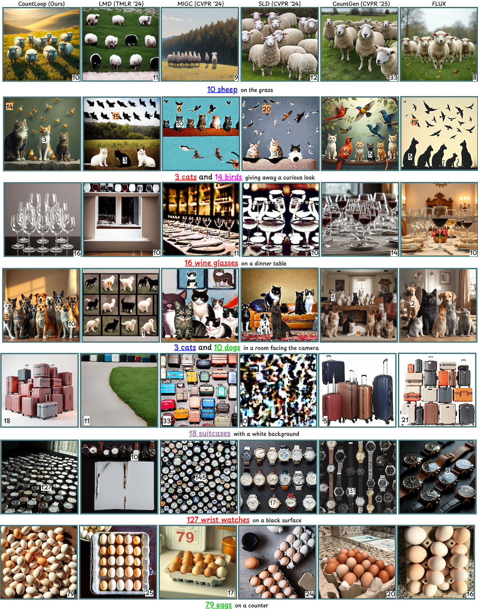
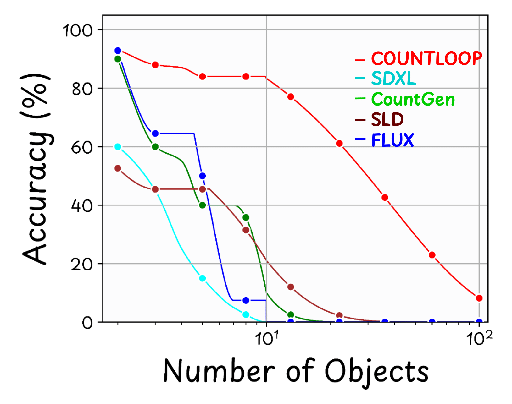

CountLoop is a training-free framework capable of generating a high number of instances with precise layout control and high aesthetic quality. Our method leverages iterative agent guidance, layout conditioning, and cross-instance texture consistency to achieve state-of-the-art results in high-instance image generation tasks.


Sample generations and benchmark comparisons. See paper for more details.

| Type | Model | COCO-Count | T2I-Compbench | CountLoop-S | CountLoop-M | ||||||||
|---|---|---|---|---|---|---|---|---|---|---|---|---|---|
| F1 | Acc. | Spatial | F1 | Acc. | Spatial | F1 | Acc. | Spatial | F1 | Acc. | Spatial | ||
| T2I | SDXL | 71.87 | 42.13 | 0.38 | 84.36 | 44.00 | 0.75 | 55.40 | 24.49 | 0.63 | 77.84 | 67.25 | 0.55 |
| FLUX | 84.73 | 54.19 | 0.53 | 90.75 | 57.00 | 0.78 | 49.08 | 29.59 | 0.65 | 79.99 | 78.00 | 0.58 | |
| SD 3.5 | 83.97 | 50.56 | 0.46 | 88.56 | 50.00 | 0.76 | 54.96 | 33.67 | 0.64 | 79.91 | 77.19 | 0.56 | |
| Counting Guidance | 67.54 | 18.50 | 0.63 | 71.41 | 17.50 | 0.56 | 36.67 | 10.20 | 0.47 | 64.42 | 25.90 | 0.41 | |
| GPT-4o | 92.91 | 72.50 | 0.55 | 94.19 | 68.00 | 0.80 | 49.45 | 39.64 | 0.69 | 79.10 | 50.11 | 0.60 | |
| Agentic | GenArtist | 75.40 | 45.50 | 0.45 | 85.33 | 55.82 | 0.70 | 51.00 | 30.56 | 0.60 | 77.87 | 70.34 | 0.57 |
| SLD | 90.34 | 69.90 | 0.70 | 91.50 | 65.50 | 0.77 | 55.04 | 40.07 | 0.75 | 82.46 | 74.35 | 0.65 | |
| RPG-DiffusionMaster | 84.89 | 60.73 | 0.60 | 91.32 | 60.00 | 0.75 | 51.89 | 34.38 | 0.70 | 80.16 | 71.46 | 0.62 | |
| L2I | LMD | 54.69 | 29.81 | 0.24 | 71.44 | 35.50 | 0.73 | 49.24 | 28.57 | 0.66 | 80.28 | 77.67 | 0.64 |
| MIGC | 73.82 | 36.11 | 0.36 | 71.47 | 33.00 | 0.65 | 54.16 | 25.17 | 0.65 | 81.06 | 79.08 | 0.62 | |
| CountGen | 58.99 | 50.00 | 0.61 | 63.75 | 19.78 | 0.75 | 48.18 | 41.40 | 0.72 | 72.00 | 45.33 | 0.69 | |
| CountLoop (Ours) | 98.47 | 93.33 | 0.93 | 95.38 | 78.50 | 0.79 | 60.00 | 55.00 | 0.97 | 85.43 | 83.67 | 0.73 | |
@article{Mondal et.al.,
title={CountLoop: Iterative Agent Guided High Instance Image Generation},
url={https://openreview.net/forum?id=NZ0H1XtcZG},
author={Mondal, Anindya and Banerjee, Ayan and Nag, Sauradip and Llados, Josep and Zhu, Xiatian and Dutta, Anjan},
language={en}}